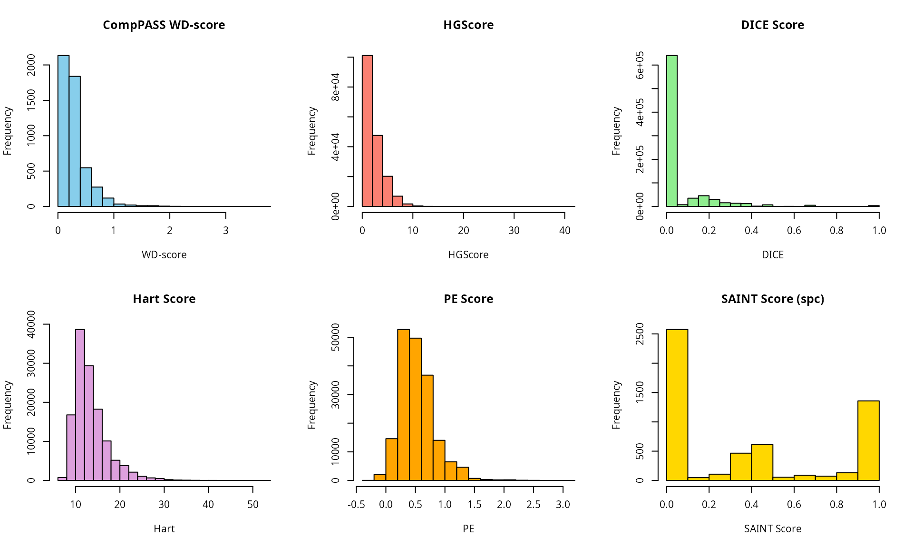

vignettes/scoring_functions.Rmd
scoring_functions.RmdThe SMAD package provides a suite of scoring functions
to evaluate protein-protein interactions (PPI) from Affinity
Purification-Mass Spectrometry (AP-MS) data. These functions assign
probability or confidence scores to interactions, helping to distinguish
true biological interactions from non-specific background
contaminants.
This vignette showcases the various scoring methods implemented in
SMAD.
Most scoring functions in SMAD take a standardized input
format. We will use the built-in TestDatInput dataset for
demonstration.
library(SMAD)
#> Loading required package: RcppAlgos
data("TestDatInput")
head(TestDatInput)
#> idRun idBait idPrey countPrey lenPrey
#> 7452 68982 TIMP2 ACTC1 15 377
#> 8016 66491 CASP1 CDK4 9 303
#> 7162 68486 BTG3 RPL24 3 157
#> 8086 66491 CASP1 IMPDH2 9 514
#> 23653 72934 LUM THOP1 7 689
#> 9196 67747 FAS RFC5 9 340The columns are: - idRun: Unique identifier for the
AP-MS run. - idBait: Unique identifier for the bait
protein. - idPrey: Unique identifier for the prey protein.
- countPrey: Spectral counts (or peptide counts) for the
prey. - lenPrey: Length of the prey protein.
The Comparative Proteomic Analysis Software Suite (CompPASS) identifies high-confidence interactions by comparing protein occurrences across multiple AP-MS experiments. It produces four types of scores: Z-score, S-score, D-score, and WD-score (weighted D-score).
scoreCompPASS <- CompPASS(TestDatInput)
head(scoreCompPASS)
#> idBait idPrey AvePSM scoreZ scoreS scoreD Entropy scoreWD
#> 1 AIFM3 AIFM1 20 7.9382230 36.055513 36.055513 0 1.6903085
#> 2 AIFM3 ALDOA 14 2.6586313 9.095453 9.095453 0 0.2308028
#> 3 AIFM3 ATP5A1 5 0.5826082 5.700877 5.700877 0 0.1529845
#> 4 AIFM3 CALR 4 0.8703043 4.654747 4.654747 0 0.1161689
#> 5 AIFM3 CCT2 24 3.1558989 12.489996 12.489996 0 0.3398374
#> 6 AIFM3 CCT4 20 2.8371693 9.013878 9.013878 0 0.2135599HGScore is based on a hypergeometric distribution error
model. It incorporates the Normalized Spectral Abundance Factor (NSAF)
to account for protein length and abundance.
scoreHG <- HG(TestDatInput)
head(scoreHG)
#> InteractorA InteractorB ppiTN tnA tnB PPI NMinTn HG
#> 1 A2M ACLY 1 122 1197 A2M~ACLY 477317 3.264772
#> 2 A2M AGK 1 122 940 A2M~AGK 477317 3.707123
#> 3 A2M AGO1 1 122 1501 A2M~AGO1 477317 2.860551
#> 4 A2M AHCY 1 122 2349 A2M~AHCY 477317 2.098700
#> 5 A2M AHSA1 1 122 386 A2M~AHSA1 477317 5.399179
#> 6 A2M AKAP8 1 122 317 A2M~AKAP8 477317 5.782404The Dice coefficient is used to score the interaction affinity between two proteins based on their co-occurrence across different runs. It focuses on prey-prey interactions.
Based on Hart et al. (2007), this algorithm uses a hypergeometric distribution to compute the probability of two proteins interacting, based on their frequency of co-purification.
scoreHart <- Hart(TestDatInput)
head(scoreHart)
#> PPI InteractorA InteractorB Freq TnA TnB totTn Hart
#> 1 AARS~ABCE1 AARS ABCE1 1 3 2 5000 15.24283
#> 2 AARS~ACADSB AARS ACADSB 1 3 3 5000 14.14395
#> 3 AARS~ACAT1 AARS ACAT1 1 3 9 5000 11.65744
#> 4 AARS~ACBD3 AARS ACBD3 1 3 4 5000 13.45053
#> 5 AARS~ACTC1 AARS ACTC1 1 3 16 5000 10.45160
#> 6 AARS~ACTN2 AARS ACTN2 1 3 4 5000 13.45053The PE score is based on a Bayesian classifier framework (Collins et al., 2007). It combines “spoke” (bait-prey) and “matrix” (prey-prey) models to compute a comprehensive enrichment score.
# PE might require data.table and RcppAlgos
scorePE <- PE(TestDatInput)
head(scorePE)
#> PPI PB BP InteractorA InteractorB spokeBP spokePB
#> 1 A2M~ACLY ACLY:A2M A2M:ACLY A2M ACLY NA NA
#> 2 A2M~AGK AGK:A2M A2M:AGK A2M AGK NA NA
#> 3 A2M~AGO1 AGO1:A2M A2M:AGO1 A2M AGO1 NA NA
#> 4 A2M~AHCY AHCY:A2M A2M:AHCY A2M AHCY NA NA
#> 5 A2M~AHSA1 AHSA1:A2M A2M:AHSA1 A2M AHSA1 NA NA
#> 6 A2M~AKAP8 AKAP8:A2M A2M:AKAP8 A2M AKAP8 NA NA
#> matrixPP PE
#> 1 0.6405372 0.6405372
#> 2 0.7885690 0.7885690
#> 3 0.5711720 0.5711720
#> 4 0.4918723 0.4918723
#> 5 1.0596816 1.0596816
#> 6 1.0596816 1.0596816Significance Analysis of INTeractome (SAINT) is a widely used tool
for AP-MS data. SMAD provides an integrated version with
two modes: Spectral Count (spc) and Intensity
(int).
This mode is used for data where protein abundance is measured by spectral counts.
# Using example data from the package
bait_path <- system.file("exdata", "TIP49", "bait.dat", package = "SMAD")
prey_path <- system.file("exdata", "TIP49", "prey.dat", package = "SMAD")
inter_path <- system.file("exdata", "TIP49", "inter.dat", package = "SMAD")
bait <- read.table(bait_path, sep = "\t", header = FALSE,
col.names = c("ip_id", "bait_id", "test_ctrl"))
prey <- read.table(prey_path, sep = "\t", header = FALSE,
col.names = c("prey_id", "prey_length"))
inter <- read.table(inter_path, sep = "\t", header = FALSE,
col.names = c("ip_id", "bait_id", "prey_id", "quant"))
result_spc <- SAINTexpress_spc(inter, prey, bait)
head(result_spc[, c("Bait", "Prey", "SaintScore", "BFDR")])
#> Bait Prey SaintScore BFDR
#> 1 ACTR5 ACTR5 0.0000000 3.658563e-01
#> 2 ACTR5 RUVBL2 0.9999999 2.994328e-09
#> 3 ACTR5 RUVBL1 1.0000000 2.220446e-16
#> 4 ACTR5 INO80C 1.0000000 0.000000e+00
#> 5 ACTR5 ACTR8 1.0000000 0.000000e+00
#> 6 ACTR5 CCT2 0.9328368 8.106743e-03This mode is designed for intensity-based data, such as those from label-free quantification (LFQ).
# Re-using the same example data for demonstration purposes
result_int <- SAINTexpress_int(inter, prey, bait)
head(result_int[, c("Bait", "Prey", "SaintScore", "BFDR")])
#> Bait Prey SaintScore BFDR
#> 1 ACTR5 ACTR5 0.00000000 0.97874778
#> 2 ACTR5 RUVBL2 0.77444020 0.06311952
#> 3 ACTR5 RUVBL1 0.55922882 0.13826125
#> 4 ACTR5 INO80C 0.08051629 0.61941539
#> 5 ACTR5 ACTR8 0.11749406 0.55342319
#> 6 ACTR5 CCT2 0.01055179 0.89860014Visualizing the distribution of scores can help in selecting appropriate thresholds for high-confidence interactions.
par(mfrow = c(2, 3))
hist(scoreCompPASS$scoreWD, main = "CompPASS WD-score", xlab = "WD-score", col = "skyblue")
hist(scoreHG$HG, main = "HGScore", xlab = "HGScore", col = "salmon")
hist(scoreDICE$DICE, main = "DICE Score", xlab = "DICE", col = "lightgreen")
hist(scoreHart$Hart, main = "Hart Score", xlab = "Hart", col = "plum")
hist(scorePE$PE, main = "PE Score", xlab = "PE", col = "orange")
hist(result_spc$SaintScore, main = "SAINT Score (spc)", xlab = "SAINT Score", col = "gold")
sessionInfo()
#> R version 4.5.3 (2026-03-11)
#> Platform: x86_64-pc-linux-gnu
#> Running under: Ubuntu 24.04.4 LTS
#>
#> Matrix products: default
#> BLAS: /usr/lib/x86_64-linux-gnu/blas/libblas.so.3.12.0
#> LAPACK: /usr/lib/x86_64-linux-gnu/lapack/liblapack.so.3.12.0 LAPACK version 3.12.0
#>
#> locale:
#> [1] LC_CTYPE=en_CA.UTF-8 LC_NUMERIC=C
#> [3] LC_TIME=en_CA.UTF-8 LC_COLLATE=en_CA.UTF-8
#> [5] LC_MONETARY=en_CA.UTF-8 LC_MESSAGES=en_CA.UTF-8
#> [7] LC_PAPER=en_CA.UTF-8 LC_NAME=C
#> [9] LC_ADDRESS=C LC_TELEPHONE=C
#> [11] LC_MEASUREMENT=en_CA.UTF-8 LC_IDENTIFICATION=C
#>
#> time zone: America/Moncton
#> tzcode source: system (glibc)
#>
#> attached base packages:
#> [1] stats graphics grDevices utils datasets methods base
#>
#> other attached packages:
#> [1] SMAD_1.27.2 RcppAlgos_2.10.0 BiocStyle_2.38.0
#>
#> loaded via a namespace (and not attached):
#> [1] jsonlite_2.0.0 dplyr_1.2.1 compiler_4.5.3
#> [4] BiocManager_1.30.27 tidyselect_1.2.1 Rcpp_1.1.1
#> [7] tidyr_1.3.2 jquerylib_0.1.4 systemfonts_1.3.2
#> [10] textshaping_1.0.5 yaml_2.3.12 fastmap_1.2.0
#> [13] R6_2.6.1 generics_0.1.4 knitr_1.51
#> [16] htmlwidgets_1.6.4 tibble_3.3.1 bookdown_0.46
#> [19] desc_1.4.3 bslib_0.10.0 pillar_1.11.1
#> [22] rlang_1.2.0 cachem_1.1.0 xfun_0.57
#> [25] fs_2.0.1 sass_0.4.10 otel_0.2.0
#> [28] cli_3.6.5 withr_3.0.2 pkgdown_2.2.0
#> [31] magrittr_2.0.5 digest_0.6.39 rstudioapi_0.18.0
#> [34] gmp_0.7-5.1 lifecycle_1.0.5 vctrs_0.7.2
#> [37] evaluate_1.0.5 glue_1.8.0 data.table_1.18.2.1
#> [40] ragg_1.5.2 purrr_1.2.1 rmarkdown_2.31
#> [43] tools_4.5.3 pkgconfig_2.0.3 htmltools_0.5.9